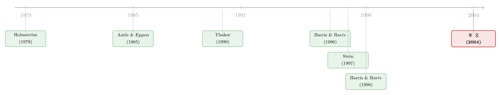

<!DOCTYPE html>
<html lang="en">
<head>
<meta charset="utf-8">
<meta name="viewport" content="width=device-width, initial-scale=1">
<title>为什么「按 NPV 选项目」反而选不出最高的 NPV？ – Jun He</title>
<style>
  @font-face {
    font-family: 'STIX Two Text';
    font-style: normal;
    font-weight: 400;
    font-display: swap;
    src: url(https://fonts.gstatic.com/s/stixtwotext/v12/YA9Gr02F12Xkf5whdwKf11l0p7uWhf8lJUzXZT2omsvbURVuMkWDmSo.woff2) format('woff2');
  }
  @font-face {
    font-family: 'STIX Two Text';
    font-style: normal;
    font-weight: 500;
    font-display: swap;
    src: url(https://fonts.gstatic.com/s/stixtwotext/v12/YA9Gr02F12Xkf5whdwKf11l0p7uWhf8lJUzXZT2omsvbURVuMkWDmSo.woff2) format('woff2');
  }
  @font-face {
    font-family: 'STIX Two Text Fallback';
    src: local('Times New Roman');
    ascent-override: 72.67%;
    descent-override: 22.7%;
    line-gap-override: 23.84%;
    size-adjust: 104.86%;
  }
</style>
<link rel="stylesheet" href="/styles.css?v=10">
<link rel="stylesheet" href="/article.css?v=11">

</head>
<body>

<header class="site-header">
  <nav>
    <a href="/" class="nav-name">Jun He</a>
    <a href="/posts">Post</a>
    <a href="/research">Research</a>
    <a href="/note">Note</a>
    <a href="/data">Data</a>
    <a href="/bergen">Bergen</a>
  </nav>
  <button class="theme-toggle" aria-label="Toggle theme" onclick="toggleTheme()">🌞</button>
</header>

<article class="article-layout" data-section="research">
  
  <div class="article-main">
    <div class="article-header">
      <h1>为什么「按 NPV 选项目」反而选不出最高的 NPV？</h1>
      
      
      <div class="paper-source">
        <div class="paper-source-title"><span class="paper-source-tag">[2004 RFS]</span> Why the NPV Criterion Does Not Maximize NPV</div>
        <div class="paper-source-authors"><a href="/research/author/elazar-berkovitch/">Elazar Berkovitch</a>, <a href="/research/author/ronen-israel/">Ronen Israel</a></div>
      </div>
      
      <div class="article-meta">
        <span>Jun He</span>
        <span>June 02, 2026</span>
      </div>
      
      <div class="article-tags">
        
        
        
        <span class="tag">公司金融</span>
        
        
        
        
        <span class="tag">资本预算</span>
        
        
        
        
        <span class="tag">委托代理</span>
        
        
        
        
        <span class="tag">信息经济学</span>
        
        
      </div>
      
    </div>

    <div class="callout"><div class="callout-title">Note</div><p>本文读的是 <strong>Berkovitch &amp; Israel (2004, Review of Financial Studies)</strong>：当总部看不全所有项目、而下属经理偏爱「大盘子」时，教科书里的 <strong>净现值 (net present value, NPV)</strong> 准则并不能选出 NPV 最高的项目；恰恰是被学界长期看不起的 <strong>内部收益率 (internal rate of return, IRR)</strong> 和 <strong>盈利指数 (profitability index, PI)</strong> 这类「比率型」准则，反而能实现最优的资本配置。一句话——<strong>NPV 是丈量价值的好尺子，却是执行选择的坏规则。</strong></p></p></div>
<h2 id="1">1 一个让金融学教授难堪的事实</h2>
<p>凡是上过公司金融第一节课的人，都背过那条铁律：<strong>评价一个项目，用 NPV；NPV 为正就上，多个互斥项目里选 NPV 最高的那个。</strong> 教科书写得斩钉截铁，老师讲得理直气壮，IRR、回收期 (payback)、PI 全被打成「有缺陷的近似」，只配当配角。</p>
<p>可是把课本合上，走进真实的企业，你会看到一幅完全相反的图景。</p>
<p>Stanley and Block (1984) 调查了 121 家跨国公司，发现 <strong>IRR 以 65.3% 的占比稳坐头把交椅</strong>，而「published materials 里被捧上天」的 NPV，只有 16.5% 的公司拿它当主要准则。Schall, Sundem, and Geijsbeek (1978) 的 189 家公司样本里，用 IRR 的有 65%，用 NPV 的只有 56%，而且把 NPV 当<strong>唯一</strong>准则的，仅 2%。哪怕到了 MBA 们大批涌入财务部门、人人都知道「学界推荐 NPV」的年代，Segelod (1995) 的详尽调查仍然显示 IRR 是霸主——NPV 的使用率从 1964 年的 11% 一路爬到 1990 年的 52%，听上去涨了不少，可作者一句话点破：很多用 IRR 的公司，<strong>只是拿 NPV 和 PI 去插值算出那个 IRR 而已</strong>。</p>
<p>于是张力就摆在这里：要么是企业愚昧，集体无视学界的金玉良言；要么，是学界漏掉了企业真正面对的难题。Berkovitch 和 Israel 这篇 2004 年的 RFS，选择了后一种解释——而且解释得相当漂亮。</p>
<h2 id="2">2 问题的转身：从「度量」到「执行」</h2>
<p>先把通常的反驳挡回去。过去为 IRR、PI「平反」的文章，路子大多是说「NPV 算不准」：要么是 Antle and Eppen (1985)、Harris and Raviv (1996) 那样强调<strong>核实项目要花成本</strong>，总部根本不知道真实 NPV；要么是实物期权 (real options) 那一脉，McDonald and Siegel (1986) 指出简单的 NPV 计算会漏掉<strong>等待的期权价值</strong>，把真 NPV 算错。这些都对，但它们的毛病都出在「<strong>算</strong>」这个字上——因为 NPV 没算准，所以决策错了。</p>
<p>本文最聪明的一步，是把问题<strong>整个翻了过来</strong>：</p>
<blockquote>
<p>假设总部能把它看到的每一个项目的 NPV 算得<strong>分毫不差</strong>。请问，「选 NPV 最高的项目」这条规则，能不能保证最后落地的就是 NPV 最高的项目？</p>
</blockquote>
<p>答案是：<strong>不能。</strong> 而且失败的原因，跟「算得准不准」一点关系都没有，纯粹出在「<strong>怎么把规则交给下属去执行</strong>」这一步。</p>
<p>直觉其实一点就透。设想公司面前有两个<strong>互斥项目</strong>：项目 \(H\) 更烧钱（资本密集），项目 \(L\) 省钱。两者未来的期望现金流一模一样，于是省钱的 \(L\) 反而 <strong>NPV 更高</strong>。但下属经理不是股东——她的效用里写着「盘子越大越好」，所以她<strong>偏爱烧钱的 \(H\)</strong>。</p>
<p>现在关键之处来了：<strong>项目是否到手，只有经理私下知道。</strong> 假如总部老老实实用「选 NPV 最高者」这条规则，那么当 \(L\) 和 \(H\) 同时到手时，经理会怎么做？她会<strong>把 \(L\) 藏起来，只上报 \(H\)</strong>。总部一看，桌上只有 \(H\)，而 \(H\) 的 NPV 是正的，于是批了 \(H\)。结果呢？公司上了 NPV 较低的项目，把 NPV 较高的 \(L\) 白白丢掉了。</p>
<p><strong>NPV 准则非但没有最大化 NPV，反而被经理玩弄于股掌之间。</strong> 这就是标题里那句近乎悖论的话的全部含义。</p>
<p>接着，一个自然的问题是：既然 NPV 规则实现不了最优选择，那什么规则可以？要回答它，得把这套「总部—经理」的博弈写成一个干净的模型。</p>
<h2 id="3">3 模型：把资本预算写成一场揭示博弈</h2>
<h3 id="3-1">3.1 设定</h3>
<p>公司由两部分组成：(1) 顶层管理者，即<strong>总部 (headquarters)</strong>，目标是最大化股东价值；(2) <strong>事业部经理 (the manager)</strong>，目标是最大化自己的效用。为了把外生的资本约束撇开，假设总部<strong>不缺钱</strong>，所有人都风险中性。</p>
<p>投资机会是「一桩生意、两种互斥技术」：项目 \(m\in\{L,H\}\)。一个<strong>规模参数 (scale parameter)</strong> \(\alpha\) 决定需求高低，其分布为 \(F(\alpha)\)。项目 \(m\) 所需投资为 \(I_m(\alpha)=\alpha I_m\)，其中 \(I_H>I_L\)（\(H\) 更资本密集）。两种技术的期望现金流相同，记 \(c_t(\alpha)=\alpha c_t\)。因为风险中性，贴现率就是无风险利率 \(\rho\)，于是未来现金流的现值</p>
<p>$$PV \equiv \sum_{t=1}^{\infty}\frac{c_t}{(1+\rho)^t}$$</p>
<p>与技术无关。这样，类型 \(m\) 项目的净现值就是论文的方程 (1)：</p>
<p>$$NPV_m(\alpha) = -\alpha I_m + \alpha\,PV,\qquad m=L,H.$$</p>
<p>由于 \(I_H>I_L\)，立刻有 \(NPV_H(\alpha) < NPV_L(\alpha)\)——<strong>烧钱的项目 NPV 更低</strong>，这正是全文的引擎。</p>
<p>经理的效用定义在工资 \(W\) 与投资规模 \(I\) 上，即方程 (2)：</p>
<p>$$U(W,I) = W + \gamma I.$$</p>
<p>这里 \(\gamma>0\) 是经理从「把盘子做大」中获得的<strong>每单位投资私利</strong>。经理没有个人财富、保留效用为零，因此 \(W\ge 0\)。</p>
<p>项目以二项过程独立到达，到达概率分别为 \(\gamma_L\) 和 \(\gamma_H\)——一个、两个、或一个都不来，都有可能。</p>
<p>时序分三步：<strong>阶段 1</strong>，总部设定一套资本配置系统（资本预算规则 + 薪酬合约）；<strong>阶段 2</strong>，经理<strong>私下</strong>观察到哪些项目可用，提交一份注明投资额与现金流的预算申请；<strong>阶段 3</strong>，总部核实申请里的项目（核实成本为零），按规则做接受/拒绝决定，并支付工资。要命的是：<strong>总部无法核实经理没上报的那些项目</strong>——等于说，对已申报项目核实成本为零，对未申报项目核实成本无穷大。</p>
<h3 id="3-2">3.2 把它解成一个揭示博弈</h3>
<p>由揭示原理 (revelation principle)，总部只需设计一个让经理<strong>如实上报</strong>的直接机制。总部要挑的是两组接受概率和一个工资：</p>
<ul>
<li>\(\lambda_L(LH,\alpha)\)：经理同时上报 \(L\) 与 \(H\) 时，<strong>接受 \(L\)</strong> 的概率（若拒了 \(L\)，就接 \(H\)，故 \(H\) 的接受概率是 \(1-\lambda_L\)）；</li>
<li>\(\lambda_H(H,\alpha)\)：经理只报 \(H\) 时，<strong>接受 \(H\)</strong> 的概率；</li>
<li>\(W(LH,\alpha)\)：经理同时上报两者时拿到的工资。</li>
</ul>
<p>总部的问题（方程 3）是在如实上报的激励相容约束下最大化股东价值（期望 NPV 减去工资）。整个机制的命门，是阻止经理「藏 \(L\) 报 \(H\)」的那条 <strong>激励相容 (incentive compatibility, IC) 约束</strong>，即论文的方程 (4)：</p>
<div class="mathanno-block"><div class="mathanno-eq">$$
\cssId{a1}{\lambda_L(LH,\alpha)\, I_L(\alpha) + \big(1-\lambda_L(LH,\alpha)\big)\, I_H(\alpha)} + \cssId{a2}{W(LH,\alpha)} \;\ge\; \cssId{a3}{\lambda_H(H,\alpha)\, I_H(\alpha)}
$$</div><aside class="mathanno-cards"><div class="mathanno-card" data-target="a1"><span class="mathanno-num">1</span>如实上报（同时报 L 与 H）时，被接受项目带来的期望规模收益——经理看重「盘子」</div><div class="mathanno-card" data-target="a2"><span class="mathanno-num">2</span>如实上报时额外拿到的工资补偿，用来填平诚实的代价</div><div class="mathanno-card" data-target="a3"><span class="mathanno-num">3</span>撒谎（藏起 L、只报 H）时，H 被接受所带来的规模收益——这是经理偷懒说谎的诱惑</div></aside><svg class="mathanno-lines"></svg></div>

<p>读这条约束，就读懂了整篇文章：左边是经理「说真话」能拿到的（规模 + 工资），右边是她「藏起 \(L\) 只报 \(H\)」能拿到的（一个更大盘子的诱惑）。<strong>只要右边压过左边，经理就会撒谎。</strong> 总部必须想办法把天平扳回来。</p>
<h3 id="3-3">3.3 关键一步：用「概率性拒绝」逼出真话</h3>
<p>总部手里有两张牌可以压低右边、抬高左边。</p>
<p><strong>第一张牌——直接干预（不花工资）。</strong> 把工资设为 \(W=0\)，但<strong>故意以一定概率拒掉 \(H\)</strong>。具体地，令</p>
<p>$$\lambda_H(H,\alpha)=\frac{I_L}{I_H}.$$</p>
<p>代进 IC 约束的右边：\(\dfrac{I_L}{I_H}\cdot I_H(\alpha)=I_L(\alpha)\)。而左边在 \(W=0\)、\(\lambda_L=1\)（如实报就接 \(L\)）时恰好是 \(I_L(\alpha)\)。两边相等，经理<strong>恰好无差异</strong>，于是愿意如实上报 \(L\)。</p>
<p>这一步的直觉极漂亮：经理上报 \(L\)，稳稳拿到规模 \(I_L(\alpha)\) 的私利；经理藏 \(L\) 报 \(H\)，则 \(H\) 只以 \(I_L/I_H\) 的概率被批，期望私利也正好是 \(I_L(\alpha)\)。<strong>把「只报 \(H\)」的期望盘子，人为压到和「老实报 \(L\)」一样大</strong>，撒谎就无利可图了。代价是什么？是总部必须<strong>承诺</strong>：当真的只有 \(H\) 可用时，也要以 \(1-I_L/I_H\) 的概率把这个正 NPV 的项目拒掉——这是事后 (ex post) 无效率的。总部靠声誉、靠董事会的薪酬设计把自己「绑」在这个承诺上。</p>
<p><strong>第二张牌——直接发钱。</strong> 总部也可以干脆付给经理「放弃 \(H\)、接受 \(L\)」的效用差价：</p>
<p>$$W(LH,\alpha)=\alpha\,\gamma\,(I_H-I_L),$$</p>
<p>此时两个项目都按需接受（\(\lambda_L=\lambda_H=1\)），不再浪费 NPV，但要掏真金白银。</p>
<p>到底用哪张牌？答案藏在 \(\gamma\)（经理私利的强度）里。这就是论文的 <strong>命题 1</strong>：</p>
<ul>
<li><strong>当 \(\gamma<1\)</strong>（经理私利不太强）：令阈值 \(\gamma^*=\dfrac{NPV_H}{\gamma I_H+NPV_H}\)。</li>
<li>若到达概率 \(\gamma_L\ge\gamma^*\)：用<strong>第一张牌</strong>，\(W=0\)、\(\lambda_H(H,\alpha)=I_L/I_H\)、\(\lambda_L=1\)（概率性拒绝 \(H\)）。</li>
<li>若 \(\gamma_L<\gamma^*\)：用<strong>第二张牌</strong>，付工资 \(W=\alpha\gamma(I_H-I_L)\)，两项目都接。</li>
<li><strong>当 \(\gamma>1\)</strong>（经理私利很强）：令 \(\gamma^{**}=\dfrac{NPV_H}{PV}\)。</li>
<li>若 \(\gamma_L\ge\gamma^{**}\)：仍用第一张牌。</li>
<li>若 \(\gamma_L<\gamma^{**}\)：<strong>干脆把选择权下放给经理</strong>（\(\lambda_H(H,\alpha)=1\)、\(\lambda_L=0\)）——因为此时为了从经理嘴里撬出 \(L\) 所要付的钱，已经超过了两个项目的 NPV 差额，不值得了。</li>
</ul>
<p>于是反转出现：<strong>最优规则在很多情况下根本不是「选 NPV 最高者」，而是「以正概率拒掉那个更烧钱的项目」。</strong> 这是一种「<strong>软配额 (rationing)</strong>」——用拒绝的概率当杠杆，把经理的私人信息撬出来。</p>
<h2 id="4-irr-pi">4 那么，为什么偏偏是 IRR 和 PI？</h2>
<p>讲到这里，模型给出的「最优规则」还只是一串接受概率 \(\lambda_H(H,\alpha)=I_L/I_H\)。它怎么就跟现实里的 IRR、PI 接上头了？</p>
<p>本文的第二个洞见在于：<strong>资本预算准则的本质，是总部把自己的选择逻辑「翻译」给下属听的一种语言。</strong> 现实中，规则是写在一本厚厚的「资本预算手册」里下发的（Segelod 1995）。如果这套逻辑讲不清楚，经理就摸不准操纵信息的后果，机制就失效了。于是选准则，本质是在 <strong>简洁（沟通成本低）</strong> 与 <strong>精确</strong> 之间做权衡。</p>
<p>而衡量「复杂度」的天然标尺，正是那个规模参数 \(\alpha\)。一条依赖 \(\alpha\) 的规则（「需求高时门槛这样、需求低时那样……」）既冗长又难传达；一条<strong>不依赖 \(\alpha\)</strong> 的规则则简洁明了。NPV 恰恰是个「水平量 (level)」，\(NPV_m(\alpha)=-\alpha I_m+\alpha PV\) 随 \(\alpha\) 起伏，天然复杂；而 IRR、PI 是「<strong>比率量 (ratio)</strong>」，把 \(\alpha\) 约掉了——同一桩生意，不管需求高低，IRR 和 PI 都是同一个数。正是这种「与规模无关」的特性，让它们能用一条简单的话，实现那条需要随 \(\alpha\) 调整接受概率的最优规则。</p>
<p>这也顺手解释了两桩长期的「未解之谜」：</p>
<p>其一，企业普遍使用<strong>高于资本成本的「门槛收益率 (hurdle rate)」</strong>。本文说，这正是「概率性拒绝 \(H\)」的等价实现——把门槛抬高，本质上就是给烧钱的项目设障碍。这与 Poterba and Summers (1995) 那个著名发现（美国企业过去半世纪的平均真实贴现率高达 12.2%，远高于约 7% 的股权回报和约 2% 的债务回报）严丝合缝。（关于「为什么企业偏要死守一个过高的门槛」，另一条「谈判力」的解释可参见<a href="/research/hurdle-rate-buffers-and-bargaining-power-in-asset/">《把「门槛」抬高，是为了在谈判桌上赢回来》</a>。）</p>
<p>其二，跨国公司往往在资本成本上额外加一个「<strong>fudge factor</strong>」。若海外投资的执行问题更严重，本文模型自然预言会用更高的门槛去对冲——一个常被批评的「拍脑袋」做法，在这里有了理论依据。</p>
<h2 id="5">5 文献脉络</h2>
<p>这篇论文坐落在「资本预算的信息与代理理论」这条河流的下游。</p>
<p>上游的源头，是 1979 年的两篇经典——Holmström (1979) 的道德风险与可观测性、Harris and Raviv (1979) 的最优激励合约——它们奠定了委托代理的分析框架。<strong>接着</strong>，研究者把这套框架搬进资本预算：Antle and Eppen (1985) 证明在信息不对称下，企业<strong>理性地配给资本</strong>（用高于资本成本的门槛率），第一次让「配额」有了微观基础。Narayanan (1985) 替回收期辩护，Thakor (1990) 在现金约束下为短期项目偏好（即回收期）找到理由——这一支都在为「被嫌弃的准则」翻案。</p>
<figure class="article-image timeline-figure">

<figcaption>文献脉络时间线（按发表年份排布；红色为本文）</figcaption>
</figure>

<p><strong>然后</strong>，Harris and Raviv 把这条线推向高峰：1996 年用核实成本解释内生的资本配给，1998 年刻画总部何时该把预算分配权下放给经理（关于这两篇，可参见<a href="/research/capital-budgeting-in-multidivision-firms-information-agency/">《好项目，凭什么自己说了算？》</a>与<a href="/research/decision-processes-agency-problems-and-information-an/">《保留否决权的代价：老板一插手，下属就开始「虚报」预算》</a>）。同期 Stein (1997) 在外生资本约束下讲「赢家通吃 (winner picking)」，用总部的监督能力解释公司的最优边界。</p>
<p><strong>但真正关键的一步在于</strong>，上述这些研究里 NPV 之所以失效，几乎都归因于「总部不知道真实 NPV」。Berkovitch 和 Israel 把这个前提<strong>拿掉</strong>——哪怕 NPV 完全已知，它仍然实现不了最优。这就把矛头从「度量误差」彻底转向了「执行机制」，也顺势把 IRR、PI 这些比率型准则，从「劣等近似」抬升为「最优规则的最佳载体」。这与实物期权一脉（McDonald and Siegel 1986）殊途同归——后者也主张用门槛率或 PI，只不过那里的理由是「算不准真 NPV」，而本文是「算得准也没用」。</p>
<h2 id="6-gamma">6 一段题外的推导：阈值 \(\gamma^*\) 从哪来</h2>
<p>为了让命题 1 的两个阈值不显得像天上掉下来，这里补一步直觉。</p>
<p>用「第一张牌」（概率性拒 \(H\)）时，代价是当只有 \(H\) 可用、却被以 \(1-I_L/I_H\) 的概率拒掉，损失的期望价值正比于 \(NPV_H\)。用「第二张牌」（发工资）时，代价是工资 \(\alpha\gamma(I_H-I_L)\)，它正比于 \(\gamma I_H\)（准确说是 \(\gamma(I_H-I_L)\)）。两张牌的相对成本，取决于这两块的比值——当 \(L\) 到达得足够频繁（\(\gamma_L\) 大）、概率性拒绝很少真的发生时，第一张牌几乎不花钱，于是</p>
<p>$$\gamma_L \ge \gamma^* = \frac{NPV_H}{\gamma I_H + NPV_H}$$</p>
<p>时偏向直接干预；反之偏向发工资。当 \(\gamma>1\)，经理私利强到「为撬出 \(L\) 而付的钱」超过 NPV 差额本身，干预与发钱都不划算，于是把决策权下放（命题 1(b)(ii)），阈值切换成 \(\gamma^{**}=NPV_H/PV\)。</p>
<p>一句话：<strong>到达频率 \(\gamma_L\)、私利强度 \(\gamma\)、以及两个项目的 NPV 落差，三者共同决定了「监督」（资本预算干预）和「激励」（薪酬合约）谁更便宜。</strong> 本文最后一个贡献，正是<strong>内生地</strong>刻画了这两种工具的边界——这在过去往往是外生假定的。</p>
<h2>7 评论与延伸（Q&amp;A + 研究方向）</h2>
<h3 id="a">(a) 几个可能的疑问</h3>
<p><strong>Q：这跟 Harris-Raviv (1996) 那套「NPV 失效是因为核实有成本」到底差在哪？</strong></p>
<blockquote>
<p>差在前提。Harris-Raviv 让 NPV 失效，靠的是总部<strong>不知道</strong>真实 NPV（核实要花钱）。本文把这个台阶撤掉：总部对它<strong>看见</strong>的每个项目都能精确算出 NPV，失效纯粹来自「经理能藏项目 + 经理偏爱大盘子」。换句话说，前者是「度量问题」，后者是「执行/沟通问题」——这也是为什么本文能进一步解释为何要用 IRR、PI 这种<strong>比率型</strong>准则。</p>
</blockquote>
<p><strong>Q：「以正概率拒掉一个正 NPV 项目」听起来很反直觉，总部凭什么会真的执行这个事后亏本的承诺？</strong></p>
<blockquote>
<p>这是全文最脆弱、也最有意思的地方。本文给了两条绑定机制：一是<strong>声誉</strong>——总部若反复食言，就再也骗不出经理的真话；二是<strong>董事会薪酬</strong>——把最优规则写进董事的激励包，而董事会薪酬不可能每个项目重谈一次，于是承诺得以维系。若连随机化都做不到，作者也说明最优规则会退化成接受概率只取 0 或 1 的确定性版本。</p>
</blockquote>
<p><strong>Q：为什么是 IRR、PI 能实现最优，而不是别的比率？</strong></p>
<blockquote>
<p>因为模型里复杂度的唯一来源是规模参数 \(\alpha\)，而最优规则需要的恰好是一条「与 \(\alpha\) 无关」的指令。IRR、PI 把 \(\alpha\) 约掉了（同一桩生意不论大小，比率不变），所以能用一句简单的话传达一条本该随 \(\alpha\) 变化的规则。NPV 是水平量、随 \(\alpha\) 起伏，注定「话多且难讲清」。</p>
</blockquote>
<p><strong>Q：模型里 \(H\) 和 \(L\) 现金流完全相同、只差投资额，是不是太特殊？</strong></p>
<blockquote>
<p>是简化，但不致命。作者明确说，只要保证 \(NPV_H(\alpha)<NPV_L(\alpha)\)（即更烧钱的项目 NPV 更低），结论照样成立。线性效用 \(U=W+\gamma I\) 也只是为了可解，主要结果在更一般的设定下依然为真。</p>
</blockquote>
<p><strong>Q：这是否意味着企业用 NPV 就是错的？</strong></p>
<blockquote>
<p>不是。作者反复强调：<strong>NPV 仍是度量「价值增量」的最佳工具</strong>。问题只出在用它去<strong>实现</strong>多个互斥项目之间的选择，且经理握有私人信息时。度量和执行是两件事——这正是标题悖论的解药。</p>
</blockquote>
<p><strong>Q：实证上怎么把这套理论和数据对上？</strong></p>
<blockquote>
<p>最直接的两个映射：一是企业普遍使用<strong>高于资本成本的门槛率</strong>（Poterba-Summers 的 12.2% 真实贴现率之谜）；二是跨国公司在资本成本上加的「fudge factor」。本文把这些「不规范」的实践，重新解读为最优配置系统的理性产物。</p>
</blockquote>
<h3 id="b">(b) 几个可能的研究问题与提案</h3>
<p><strong>1. 把「准则选择」搬到信用市场：债务契约里的「比率型」条款。</strong>
【经济故事】本文的逻辑——比率型规则因「与规模无关、易沟通」而胜出——能否解释为什么贷款契约 (covenant) 大量使用<strong>比率型指标</strong>（利息保障倍数、杠杆率）而非水平型指标？债权人和借款企业之间也有信息不对称与「做大资产负债表」的代理冲突。
【可行性】中。数据可用（Dealscan 契约条款 + Compustat），但识别「比率型条款是为了沟通/约束而非纯风险控制」需要巧妙的设计，难点在于把「沟通成本」这个机制单独剥出来。</p>
<p><strong>2. 门槛率溢价的横截面检验。</strong>
【经济故事】命题预言：经理私利越强（\(\gamma\) 越大）、好项目到达越稀疏（\(\gamma_L\) 越小）的事业部，越该用更高的门槛率。能否用公司治理强度、经理「帝国构建」倾向作为 \(\gamma\) 的代理变量，检验门槛率与之的横截面关系？
【可行性】中。需要企业内部的项目级门槛率数据（罕见，多来自问卷如 Graham-Harvey 系列），识别 \(\gamma\) 的代理变量也有争议，但方向清晰、故事干净。</p>
<p><strong>3. 外资持有人作为「外部沟通成本」的冲击。</strong>
【经济故事】当外资股东大量进入，总部与投资者之间的沟通与监督摩擦上升，本文逻辑预言企业会更依赖<strong>简单、可比的准则</strong>（IRR、PI、统一门槛率）。这与外资对公司治理的影响这条线天然相连（可参见<a href="/research/are-foreign-investors-locusts-the-long-term-effects-of/">《外资真是「蝗虫」吗？》</a>）。
【可行性】中偏低。准则使用是内部决策、数据极难获得；可退而求其次，用「投资对股价信息的敏感度」等可观测代理变量间接检验。</p>
<p><strong>4. 「概率性拒绝」的实验室检验。</strong>
【经济故事】本文核心机制是「总部以 \(I_L/I_H\) 的概率拒绝大项目来撬真话」。这是一个干净、可被实验复现的揭示博弈——真人被试在「藏项目」诱惑下，会不会如理论预言般在阈值附近切换策略？
【可行性】高。标准的实验经济学设计即可，参数 \(\gamma\)、\(\gamma_L\) 可外生操纵，识别近乎完美；唯一问题是外部效度。</p>
<h2 id="8">8 我的判断</h2>
<p>这篇文章的贡献，是一次漂亮的「<strong>视角转身</strong>」：它没有去补 NPV 的计算，而是指出——<strong>即便算得分毫不差，作为执行规则的 NPV 依然会被私人信息击穿。</strong> 由此把 IRR、PI 从「劣等近似」翻案为「最优规则的最佳沟通载体」，并顺手解释了门槛率溢价与跨国「fudge factor」两个老谜题。模型干净、命题清晰、阈值有直觉，是理论公司金融里少见的「读完会心一笑」的作品。</p>
<p>但它的软肋也很清楚。<strong>其一，承诺问题被处理得过于轻巧。</strong> 整套机制建立在「总部能可信地承诺以正概率拒掉正 NPV 项目」之上，而声誉与董事会薪酬这两根绳子，在现实里能不能真的拴住一个事后想反悔的总部，是存疑的——一旦承诺不可信，最优规则就退化，IRR 的优越性也随之打折。<strong>其二，「准则即沟通语言」这个核心假设，本身没有被检验。</strong> 复杂度被等同于「对 \(\alpha\) 的依赖」，这是一个相当特殊的建模选择；现实中准则的「简单」可能来自完全不同的来源（会计惯例、监管、历史路径依赖）。<strong>其三，全文是纯理论，没有任何直接实证。</strong> 它能「合理化」观察到的现象，但合理化不等于检验——门槛率高、用 IRR 多，可以有十种解释，本文只是其中一种。</p>
<p>后续我最想看到的，是把这套「度量 vs. 执行」的二分法<strong>拉到数据里去</strong>：找一个能外生改变「总部—经理沟通成本」或「经理私利强度」的冲击（比如治理改革、外资进入、分部重组），看企业是否如理论预言那样，在 NPV 与 IRR/PI 之间、在「干预」与「发薪」之间切换。在公司债与内部资本市场的交叉地带，这样的自然实验并非遥不可及。</p>
<h2 id="">参考文献</h2>
<ul>
<li>Antle, R., and G. D. Eppen (1985). Capital Rationing and Organizational Slack in Capital Budgeting. <em>Management Science</em> 31, 163–174.</li>
<li>Berkovitch, E., and R. Israel (2004). Why the NPV Criterion does not Maximize NPV. <em>Review of Financial Studies</em> 17(1), 239–255.</li>
<li>Harris, M., and A. Raviv (1979). Optimal Incentive Contracts with Imperfect Information. <em>Journal of Economic Theory</em> 20, 231–259.</li>
<li>Harris, M., and A. Raviv (1996). The Capital Budgeting Process, Incentives and Information. <em>Journal of Finance</em> 51, 1139–1174.</li>
<li>Harris, M., and A. Raviv (1998). Capital Budgeting and Delegation. <em>Journal of Financial Economics</em> 50, 259–289.</li>
<li>Holmström, B. (1979). Moral Hazard and Observability. <em>Bell Journal of Economics</em> 13, 324–340.</li>
<li>McDonald, R., and D. R. Siegel (1986). The Value of Waiting to Invest. <em>Quarterly Journal of Economics</em> 101, 707–727.</li>
<li>Narayanan, M. P. (1985). Observability and the Payback Criterion. <em>Journal of Business</em> 58, 309–323.</li>
<li>Poterba, J. M., and L. H. Summers (1995). A CEO Survey of U.S. Companies' Time Horizons and Hurdle Rates. <em>Sloan Management Review</em> 37, 43–53.</li>
<li>Schall, L. D., G. L. Sundem, and W. R. Geijsbeek, Jr. (1978). Survey and Analysis of Capital Budgeting Methods. <em>Journal of Finance</em> 33, 281–287.</li>
<li>Segelod, E. (1995). <em>Resource Allocation in Divisionalized Groups</em>. Ashgate Publishing, Brookfield, USA.</li>
<li>Stanley, M. T., and S. B. Block (1984). A Survey of Multinational Capital Budgeting. <em>Financial Review</em> 19, 36–54.</li>
<li>Stein, J. C. (1997). Internal Capital Markets and the Competition for Corporate Resources. <em>Journal of Finance</em> 52, 111–133.</li>
<li>Thakor, A. V. (1990). Investment 'Myopia' and the Internal Organization of Capital Allocation Decisions. <em>Journal of Law, Economics, &amp; Organization</em> 6, 129–154.</li>
</ul>

    
  </div>

  
  <aside class="article-toc">
    <nav>
      <h4>On this page</h4>
      <ul>
        <li><a href="#1">1 一个让金融学教授难堪的事实</a></li>
        <li><a href="#2">2 问题的转身：从「度量」到「执行」</a></li>
        <li><a href="#3">3 模型：把资本预算写成一场揭示博弈</a></li>
          <li><a href="#3-1">3.1 设定</a></li>
          <li><a href="#3-2">3.2 把它解成一个揭示博弈</a></li>
          <li><a href="#3-3">3.3 关键一步：用「概率性拒绝」逼出真话</a></li>
        <li><a href="#4-irr-pi">4 那么，为什么偏偏是 IRR 和 PI？</a></li>
        <li><a href="#5">5 文献脉络</a></li>
        <li><a href="#6-gamma">6 一段题外的推导：阈值 \(\gamma^*\) 从哪来</a></li>
        <li><a href="#7-q-a">7 评论与延伸（Q&A + 研究方向）</a></li>
          <li><a href="#a">(a) 几个可能的疑问</a></li>
          <li><a href="#b">(b) 几个可能的研究问题与提案</a></li>
        <li><a href="#8">8 我的判断</a></li>
        <li><a href="#">参考文献</a></li>
      </ul>
    </nav>
  </aside>
  
</article>


<script src="/theme.js"></script>


<script>
  window.MathJax = {
    loader: { load: ['[tex]/html'] },
    tex: {
      packages: { '[+]': ['html'] },
      inlineMath: [['\\(', '\\)']],
      displayMath: [['$$', '$$'], ['\\[', '\\]']]
    },
    options: { skipHtmlTags: ['script', 'noscript', 'style', 'textarea', 'pre', 'code'] }
  };
</script>
<script src="https://cdn.jsdelivr.net/npm/mathjax@3/es5/tex-mml-chtml.js" async></script>
<script src="/mathanno.js"></script>
<script src="/lang-toggle.js"></script>
</body>
</html>